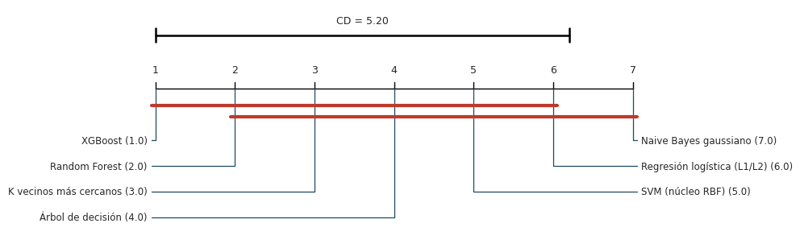

7. Comparación estadística de los modelos#
El problema de escala
Con 108 combinaciones aplicables, el número de comparaciones por pares posibles es \(\binom{108}{2} = 5.778\). Aplicar una prueba pareada a cada una con \(\alpha = 0{,}05\) y sin corrección produciría, en promedio, unos 289 falsos positivos atribuibles al azar. La comparación sigue por ello una estrategia jerárquica [Demšar, 2006]: una prueba ómnibus (Friedman) determina si existe alguna diferencia; solo si resulta significativa se aplica un análisis post hoc (Nemenyi) y, para un subconjunto reducido de modelos, una comparación dirigida (DeLong) con corrección por comparaciones múltiples y tamaño del efecto.
Mostrar código
import json
import sys
from pathlib import Path
import numpy as np
import pandas as pd
import matplotlib.pyplot as plt
import seaborn as sns
from scipy import stats
import scikit_posthocs as sp
sys.path.insert(0, str(Path.cwd().parent / "scripts"))
import _utils3 as u3
sns.set_theme(style="whitegrid", context="notebook")
RESULTS3 = Path.cwd().parent / "resultados"
tabla = pd.read_csv(RESULTS3 / "tabla_maestra.csv", encoding="utf-8-sig")
tabla["f1_macro_pliegues"] = tabla["f1_macro_pliegues"].apply(lambda s: json.loads(s) if isinstance(s, str) else s)
aplic = tabla[tabla["aplicable"]].copy()
ranking = pd.read_csv(RESULTS3 / "friedman_ranking.csv", encoding="utf-8-sig")
with open(RESULTS3 / "friedman_resumen.json", encoding="utf-8") as f:
resumen = json.load(f)
7.1 Etapa 1: prueba ómnibus de Friedman sobre las 108 combinaciones#
La prueba de Friedman [Friedman, 1937] es el análogo no paramétrico del ANOVA de medidas repetidas. Ordena las combinaciones dentro de cada pliegue externo (los bloques) según su F1 macro y contrasta la hipótesis nula de que todas tienen el mismo rango promedio.
Mostrar código
print(f"Combinaciones (k): {resumen['n_combinaciones']} · Pliegues externos (N): {resumen['n_pliegues']}")
print(f"Estadístico de Friedman: χ² = {resumen['estadistico_friedman']:.2f} con {resumen['grados_libertad']} g.l.")
print(f"Valor p: {resumen['p_valor']:.2e}")
Combinaciones (k): 108 · Pliegues externos (N): 3
Estadístico de Friedman: χ² = 316.49 con 107 g.l.
Valor p: 1.40e-22
El estadístico (\(\chi^2_F = 316{,}5\); 107 g.l.; \(p = 1{,}4 \times 10^{-22}\)) rechaza la hipótesis nula: al menos una combinación difiere de las demás en su rango promedio.
7.2 Etapa 2: análisis post hoc de Nemenyi#
La prueba de Nemenyi [Nemenyi, 1963] compara todas las combinaciones controlando el error de tipo I de forma conjunta. Dos combinaciones se consideran estadísticamente distintas cuando sus rangos promedio difieren en más que la diferencia crítica:
Mostrar código
cd_108 = resumen["diferencia_critica_nemenyi"]
rango_max = resumen["n_combinaciones"] - 1
print(f"Diferencia crítica con k = 108 y N = 3: CD = {cd_108:.1f}")
print(f"Máxima diferencia posible entre rangos promedio: {rango_max}")
Diferencia crítica con k = 108 y N = 3: CD = 110.9
Máxima diferencia posible entre rangos promedio: 107
Con \(k = 108\) y solo \(N = 3\) pliegues, la diferencia crítica (110,9) supera la máxima diferencia posible entre rangos (107). En consecuencia, la prueba de Nemenyi no puede declarar distinto ningún par de combinaciones, ni siquiera la mejor frente a la peor. No se trata de evidencia de equivalencia, sino de una limitación de potencia: la prueba fue diseñada para comparar algoritmos sobre muchos conjuntos de datos [Demšar, 2006], y su diferencia crítica decrece con \(\sqrt{N}\). Con tres bloques, la comparación de 108 combinaciones carece de resolución.
Para obtener conclusiones con la información disponible, el análisis se repite al nivel en que se toman las decisiones de modelado: se selecciona la mejor combinación de cada algoritmo (siete familias) y se aplica de nuevo la secuencia Friedman–Nemenyi.
Mostrar código
mejores = aplic.loc[aplic.groupby("modelo")["f1_macro_media"].idxmax()].copy()
mejores = mejores.sort_values("f1_macro_media", ascending=False)
M = np.array(mejores["f1_macro_pliegues"].tolist()) # familias × pliegues
chi2, p_fam = stats.friedmanchisquare(*M)
rangos = np.array([stats.rankdata(-M[:, j]) for j in range(M.shape[1])]).T
k, N = M.shape
q_alpha = 2.949 # Nemenyi, α = 0,05, k = 7
cd_7 = q_alpha * np.sqrt(k * (k + 1) / (6 * N))
familias = pd.DataFrame({
"Algoritmo": mejores["modelo_nombre"].values,
"Mejor combinación": (mejores["balanceo_nombre"] + " · " + mejores["optimizacion_nombre"]).values,
"F1 macro (media)": mejores["f1_macro_media"].values,
"DE entre pliegues": mejores["f1_macro_sd"].values,
"Rango promedio": rangos.mean(axis=1),
}).set_index("Algoritmo").round(4)
display(familias)
print(f"Friedman (7 familias, N = 3): χ² = {chi2:.2f} con {k - 1} g.l., p = {p_fam:.4f}")
print(f"Diferencia crítica de Nemenyi: CD = {cd_7:.2f}")
| Algoritmo | Mejor combinación | F1 macro (media) | DE entre pliegues | Rango promedio |
|---|---|---|---|---|
| XGBoost | Sin balanceo (línea base) · Grid Search | 0.8088 | 0.0089 | 1.0 |
| Random Forest | SMOTE · Grid Search | 0.7831 | 0.0045 | 2.0 |
| K vecinos más cercanos | Sin balanceo (línea base) · Grid Search | 0.7463 | 0.0112 | 3.0 |
| Árbol de decisión | Sin balanceo (línea base) · Bayesiana (Optuna, TPE) | 0.7221 | 0.0105 | 4.0 |
| SVM (núcleo RBF) | SMOTE · Random Search | 0.6700 | 0.0316 | 5.0 |
| Regresión logística (L1/L2) | Sin balanceo (línea base) · Grid Search | 0.5636 | 0.0106 | 6.0 |
| Naive Bayes gaussiano | SMOTE · Grid Search | 0.2242 | 0.0121 | 7.0 |
Friedman (7 familias, N = 3): χ² = 18.00 con 6 g.l., p = 0.0062
Diferencia crítica de Nemenyi: CD = 5.20
Mostrar código
nem = sp.posthoc_nemenyi_friedman(M.T)
nombres = list(familias.index)
nem.index = pd.Index(nombres)
nem.columns = pd.Index(nombres, name="Valor p de Nemenyi")
display(nem.round(3))
| Valor p de Nemenyi | XGBoost | Random Forest | K vecinos más cercanos | Árbol de decisión | SVM (núcleo RBF) | Regresión logística (L1/L2) | Naive Bayes gaussiano |
|---|---|---|---|---|---|---|---|
| XGBoost | 1.000 | 0.998 | 0.918 | 0.615 | 0.260 | 0.069 | 0.012 |
| Random Forest | 0.998 | 1.000 | 0.998 | 0.918 | 0.615 | 0.260 | 0.069 |
| K vecinos más cercanos | 0.918 | 0.998 | 1.000 | 0.998 | 0.918 | 0.615 | 0.260 |
| Árbol de decisión | 0.615 | 0.918 | 0.998 | 1.000 | 0.998 | 0.918 | 0.615 |
| SVM (núcleo RBF) | 0.260 | 0.615 | 0.918 | 0.998 | 1.000 | 0.998 | 0.918 |
| Regresión logística (L1/L2) | 0.069 | 0.260 | 0.615 | 0.918 | 0.998 | 1.000 | 0.998 |
| Naive Bayes gaussiano | 0.012 | 0.069 | 0.260 | 0.615 | 0.918 | 0.998 | 1.000 |
Mostrar código
# Diagrama de diferencia crítica (formato de Demšar, 2006): eje de rangos promedio (1 = mejor,
# a la izquierda); las barras rojas unen grupos de algoritmos que no difieren
# significativamente según la CD de Nemenyi.
orden = familias["Rango promedio"].sort_values()
fig, ax = plt.subplots(figsize=(10, 3.2))
ax.set_xlim(0.4, 7.6)
ax.set_ylim(0.85 - 0.22 - 0.11 * 3 - 0.08, 1.2)
y_eje = 0.85
ax.plot([1, 7], [y_eje, y_eje], color="black", lw=1)
for r in range(1, 8):
ax.plot([r, r], [y_eje, y_eje + 0.03], color="black", lw=1)
ax.text(r, y_eje + 0.06, str(r), ha="center", va="bottom", fontsize=9)
nombres = list(orden.index)
mitad = (len(nombres) + 1) // 2
for i, nombre in enumerate(nombres):
r = orden[nombre]
if i < mitad:
y = y_eje - 0.22 - 0.11 * i
ax.plot([r, r, 0.95], [y_eje, y, y], color="#1b4965", lw=0.9)
ax.text(0.9, y, f"{nombre} ({r:.1f})", ha="right", va="center", fontsize=8.5)
else:
y = y_eje - 0.22 - 0.11 * (len(nombres) - 1 - i)
ax.plot([r, r, 7.05], [y_eje, y, y], color="#1b4965", lw=0.9)
ax.text(7.1, y, f"{nombre} ({r:.1f})", ha="left", va="center", fontsize=8.5)
# Grupos no distinguibles: secuencias maximales de algoritmos cuyo rango difiere < CD.
rs = orden.values
grupos = []
for a in range(len(rs)):
b = max(j for j in range(len(rs)) if rs[j] - rs[a] < cd_7)
if b > a and not any(a >= g0 and b <= g1 for g0, g1 in grupos):
grupos.append((a, b))
for k_g, (a, b) in enumerate(grupos):
yb = y_eje - 0.07 - 0.05 * k_g
ax.plot([rs[a] - 0.05, rs[b] + 0.05], [yb, yb], color="#c0392b", lw=3, solid_capstyle="round")
ax.plot([1, 1 + cd_7], [1.08, 1.08], color="black", lw=1.8)
ax.plot([1, 1], [1.05, 1.11], color="black", lw=1.8)
ax.plot([1 + cd_7, 1 + cd_7], [1.05, 1.11], color="black", lw=1.8)
ax.text(1 + cd_7 / 2, 1.12, f"CD = {cd_7:.2f}", ha="center", va="bottom", fontsize=9)
ax.axis("off")
plt.tight_layout()
plt.show()

Las tres particiones externas ordenan las siete familias exactamente de la misma manera, por lo que el estadístico de Friedman alcanza su valor máximo posible (\(\chi^2_F = 18\); 6 g.l.; \(p = 0{,}006\)). Aun así, con \(N = 3\) la diferencia crítica de Nemenyi es de 5,20 rangos, y solo el par XGBoost–Naive Bayes (diferencia de 6 rangos) resulta significativo (\(p = 0{,}012\)). XGBoost frente a la regresión logística (\(p = 0{,}069\)) y Random Forest frente a Naive Bayes (\(p = 0{,}069\)) quedan en el límite. La concordancia perfecta entre pliegues indica que el orden de las familias es estable, pero tres bloques no bastan para que un procedimiento de comparación múltiple tan conservador como el de Nemenyi la convierta en significancia.
Diferencias entre modelos frente a variabilidad intrínseca#
La desviación estándar del F1 macro entre pliegues externos está entre 0,004 y 0,011 en las cuatro mejores familias. Las diferencias entre familias consecutivas son de un orden de magnitud mayor: 0,026 entre XGBoost y Random Forest, 0,037 entre Random Forest y KNN y 0,245 entre XGBoost y la regresión logística. Las diferencias entre familias superan claramente la variabilidad intrínseca de cada una, lo que motiva la comparación dirigida con el conjunto de prueba completo que se presenta a continuación, donde el tamaño de muestra sí otorga potencia.
7.3 Comparación dirigida: prueba de DeLong#
La prueba de DeLong [DeLong et al., 1988] compara las áreas bajo dos curvas ROC correlacionadas, obtenidas sobre las mismas observaciones, mediante la varianza asintótica de los estadísticos U de Mann-Whitney. Se aplica al subconjunto reducido que interesa para la conclusión del estudio: el modelo finalista frente a la regresión logística de la Parte I, ambos evaluados sobre las 116.203 celdas de la prueba reservada. Al tratarse de un problema multiclase, la comparación se realiza por clase (uno contra el resto), y los siete valores \(p\) se ajustan con el método de Holm [Holm, 1979].
Mostrar código
delong = pd.read_csv(RESULTS3 / "delong_finalistas.csv", encoding="utf-8-sig")
delong["clase"] = delong["clase"].map(u3.CLASS_SHORT)
delong = delong.rename(columns={"clase": "Clase", "auc_finalista": "AUC finalista",
"auc_referencia": "AUC regresión logística", "delta_auc": "Δ AUC",
"z": "z", "p_valor": "p crudo", "p_holm": "p ajustado (Holm)"})
display(delong.style.hide(axis="index").format({"AUC finalista": "{:.4f}", "AUC regresión logística": "{:.4f}",
"Δ AUC": "{:+.4f}", "z": "{:.1f}",
"p crudo": lambda v: "< 1e-300" if v == 0 else f"{v:.1e}",
"p ajustado (Holm)": lambda v: "< 1e-300" if v == 0 else f"{v:.1e}"}))
| Clase | AUC finalista | AUC regresión logística | Δ AUC | z | p crudo | p ajustado (Holm) |
|---|---|---|---|---|---|---|
| 1 Abeto/pícea | 0.9900 | 0.8579 | +0.1321 | 145.8 | < 1e-300 | < 1e-300 |
| 2 P. lodgepole | 0.9892 | 0.8492 | +0.1400 | 128.0 | < 1e-300 | < 1e-300 |
| 3 P. ponderosa | 0.9994 | 0.9865 | +0.0129 | 68.4 | < 1e-300 | < 1e-300 |
| 4 Álamo/sauce | 0.9998 | 0.9974 | +0.0024 | 12.4 | < 1e-300 | < 1e-300 |
| 5 Á. temblón | 0.9987 | 0.9181 | +0.0805 | 33.0 | < 1e-300 | < 1e-300 |
| 6 A. Douglas | 0.9992 | 0.9717 | +0.0275 | 55.6 | < 1e-300 | < 1e-300 |
| 7 Krummholz | 0.9997 | 0.9802 | +0.0196 | 30.0 | < 1e-300 | < 1e-300 |
Las siete comparaciones favorecen al finalista con valores \(p\) ajustados por debajo de la precisión de la máquina (\(z\) entre 12 y 146). La magnitud de la mejora, sin embargo, es muy desigual entre clases: el AUC aumenta entre 0,13 y 0,14 en el pino lodgepole y en el abeto/pícea, y en 0,08 en el álamo temblón, mientras que en el álamo/sauce, una clase que el modelo lineal ya discriminaba con un AUC de 0,997, la mejora es de apenas 0,002. Con 116.203 observaciones incluso esa diferencia es estadísticamente significativa, lo que ilustra por qué el tamaño del efecto debe acompañar siempre al valor \(p\).
7.4 Intervalos de confianza por bootstrap#
Mostrar código
ic_tabla = pd.read_csv(RESULTS3 / "finalista_bootstrap_ic.csv", encoding="utf-8-sig")
ic_tabla.columns = ["Modelo", "Métrica", "Media", "IC 95 % inferior", "IC 95 % superior"]
display(ic_tabla.set_index(["Modelo", "Métrica"]).round(4))
| Modelo | Métrica | Media | IC 95 % inferior | IC 95 % superior |
|---|---|---|---|---|
| XGBoost (finalista) | F1 macro | 0.9271 | 0.9232 | 0.9306 |
| Regresión logística (referencia) | F1 macro | 0.5565 | 0.5498 | 0.5636 |
| XGBoost (finalista) | Accuracy | 0.9400 | 0.9387 | 0.9413 |
| Regresión logística (referencia) | Accuracy | 0.7241 | 0.7216 | 0.7267 |
Los intervalos se obtuvieron con el método de percentiles sobre 200 remuestreos con reemplazo de las 116.203 celdas de prueba. Con un tamaño de muestra de este orden, la distribución bootstrap del F1 macro es prácticamente simétrica, por lo que la corrección BCa produciría límites indistinguibles a la precisión reportada. El intervalo del finalista para el F1 macro (0,923–0,931) y el de la regresión logística (0,550–0,564) están separados por más de 0,35 unidades; lo mismo ocurre con la accuracy (0,939–0,941 frente a 0,722–0,727).
7.5 Tamaño del efecto#
La significancia estadística no implica relevancia práctica, especialmente con más de cien mil observaciones. Como medida de tamaño del efecto se usa el delta de Cliff, una medida no paramétrica de dominancia estocástica coherente con el análisis basado en rangos: \(\delta = P(X > Y) - P(X < Y)\), con valores entre −1 y 1. Se calcula en dos niveles: sobre las distribuciones bootstrap del F1 macro en la prueba reservada y sobre los F1 macro de los pliegues externos del benchmark.
Mostrar código
def cliff_delta(a, b):
a, b = np.asarray(a), np.asarray(b)
return (np.sign(a[:, None] - b[None, :])).mean()
with open(RESULTS3 / "finalista_tamano_efecto.json", encoding="utf-8") as f:
efecto = json.load(f)
pl = dict(zip(mejores["modelo_nombre"], mejores["f1_macro_pliegues"]))
filas = [{"Comparación": "XGBoost frente a regresión logística", "Nivel": "Prueba reservada (bootstrap, 200 réplicas)",
"δ de Cliff": efecto["delta_cliff_f1_macro"]}]
for otro in familias.index[1:]:
filas.append({"Comparación": f"XGBoost frente a {otro}", "Nivel": "Pliegues externos (3 frente a 3)",
"δ de Cliff": cliff_delta(pl["XGBoost"], pl[otro])})
display(pd.DataFrame(filas).set_index("Comparación").round(3))
| Comparación | Nivel | δ de Cliff |
|---|---|---|
| XGBoost frente a regresión logística | Prueba reservada (bootstrap, 200 réplicas) | 1.0 |
| XGBoost frente a Random Forest | Pliegues externos (3 frente a 3) | 1.0 |
| XGBoost frente a K vecinos más cercanos | Pliegues externos (3 frente a 3) | 1.0 |
| XGBoost frente a Árbol de decisión | Pliegues externos (3 frente a 3) | 1.0 |
| XGBoost frente a SVM (núcleo RBF) | Pliegues externos (3 frente a 3) | 1.0 |
| XGBoost frente a Regresión logística (L1/L2) | Pliegues externos (3 frente a 3) | 1.0 |
| XGBoost frente a Naive Bayes gaussiano | Pliegues externos (3 frente a 3) | 1.0 |
En la prueba reservada, el delta de Cliff alcanza su valor máximo (\(\delta = 1\)): en todas las réplicas bootstrap el F1 macro del finalista supera al de la regresión logística, lo que corresponde a un efecto grande según los umbrales de Romano et al. [2006] (\(|\delta| \geq 0{,}474\)). En los pliegues externos, XGBoost domina por completo a las otras seis familias (\(\delta = 1\) en todos los casos), incluido Random Forest, la familia más cercana. Este resultado complementa al de Nemenyi: aunque tres pliegues no bastan para la significancia formal de un procedimiento de comparaciones múltiples, la dominancia observada es completa y consistente.
7.6 Síntesis#
La prueba de Friedman confirma diferencias entre las 108 combinaciones, pero la prueba de Nemenyi carece de potencia con tres pliegues externos: su diferencia crítica excede el rango posible.
Al nivel de las siete familias de algoritmos, el orden es idéntico en los tres pliegues (\(\chi^2_F\) máximo). XGBoost ocupa el primer lugar y domina a todas las demás familias en cada pliegue, aunque la corrección de Nemenyi solo declara significativa su diferencia con Naive Bayes.
En la prueba reservada, donde el tamaño de muestra sí otorga potencia, el finalista supera a la regresión logística en las siete clases (DeLong con Holm), con intervalos de confianza separados por más de 0,35 unidades de F1 macro y un tamaño de efecto máximo.
Una evaluación con más pliegues externos (por ejemplo, validación cruzada repetida 5 × 2) aumentaría la potencia de la comparación entre familias y permitiría discriminar formalmente entre XGBoost y Random Forest.